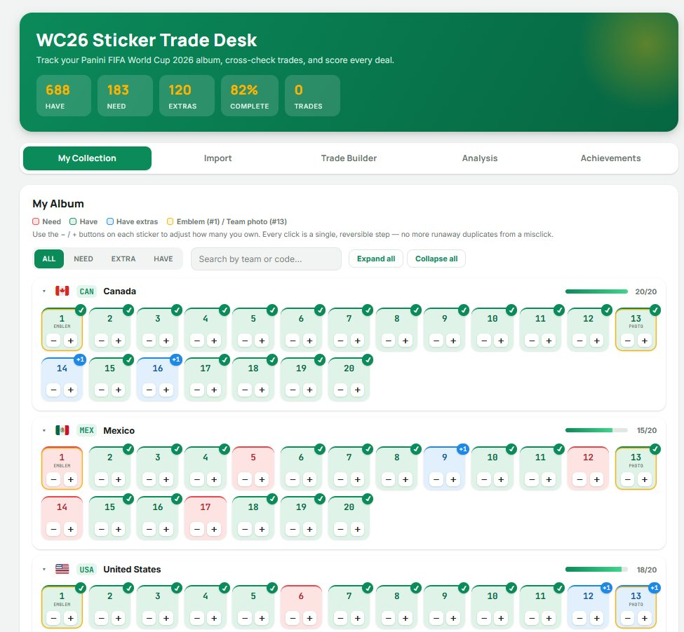
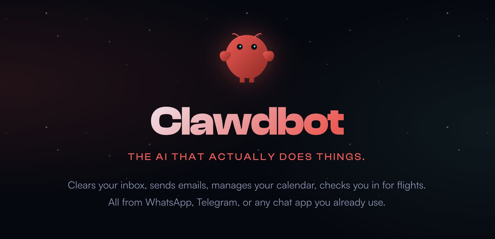

Credentials
Certifications

AI Fluency: Framework & Foundations
Anthropic · Apr 2026
Teaching AI Fluency
Anthropic · Apr 2026
Introduction to Model Context Protocol
Anthropic · Jul 2026

B.S. Computer Science
New Jersey Institute of Technology · 2023
I don't trust a fix until I know why it works.
I find the bottlenecks slowing a workload down and the business problems nobody's named yet, then fix them with AI. Now applying that same process to other industries and small businesses too.
A bit more
Most people I talk to tried an AI tool once, didn't see the value, and stopped there. Part of what I do now is walking them through what's actually possible and rebuilding their process around it, backed by a growing library of agents and techniques I keep refining across every project I take on.
That's the idea behind Common Ground AI Consulting: take the same process I use to solve problems with AI and apply it to small businesses and industries outside software entirely. I'm a developer and a mentor at the core of it, but I've been chasing the side work too, out of interest, and because the opportunities in this field keep showing up faster than I can turn them down.
I also mentor a developer who was hired based on his performance in a university capstone program I led. He's a year into the job now, and I still review his work the way I'd want mine reviewed: explain the reasoning, not just hand over the fix.
Background
Tracked progress across 20+ students and delivered structured feedback to parents monthly. Students averaged a 30% improvement in programming skills by internal metrics.
Converted the Tableau JS API into reusable React components to reduce integration overhead. Also built a React app for testing and demoing API endpoints, which accelerated bug identification across the team.
Credentials
AI Fluency: Framework & Foundations
Anthropic · Apr 2026
Teaching AI Fluency
Anthropic · Apr 2026
Introduction to Model Context Protocol
Anthropic · Jul 2026
B.S. Computer Science
New Jersey Institute of Technology · 2023
Selected work

Built entirely through Claude artifacts, without ever looking at the underlying code. Scan a World Cup sticker collection, see what's missing, and check whether a trade is actually worth making.

Built a custom Claude Skill for Pine Script development, then used it to ship a harmonic pattern detector and a dynamic support/resistance indicator.
3,000+ member Discord community using the indicators

Same shape as the UFC predictor, backed by real APIs this time. Built a caching layer on its own to stay under free-tier limits, and surfaces failed data pulls in the UI instead of failing silently.

A live Claude artifact wired to email, calendar, and Google Drive. Surfaces the job-related messages buried in an inbox and rates them against a resume.

A fully local AI agent running through OpenClaw on a Mac Mini, reachable over Discord. Memory runs on Obsidian's graph links instead of a vector database.

An idea that stalled for years on a data problem: no API, no structured URLs. Built a custom scraper with Claude Code to pull and normalize a clean dataset.
Articles
Learning to ask for help, then learning to be asked Editor's pick
Building a local AI agent from scratch with Ollama and OpenClaw
Owning a legacy app across four framework migrations
How I built a harmonic pattern detector in Pine Script
An ADA compliance agent that won't touch code without asking
Teaching the ADA agent to write its own patch files
Teaching an agent your codebase's unwritten SQL rules
Testing the limits of vibe coding with Claude
A few years of watching AI go from confidently wrong to actually useful
How I ended up building the company's first MCP server
Redesigning our EMR's UI without a frontend team
Letting the ADA agent scan an entire codebase on its own
Rebuilding the internal site's frontend in three days
Two MCP servers I built for my own dev workflow
Turning the UI rebuild into a design system
Scaling our MCP servers with AWS AgentCore, Bedrock, and Lambda
Open to full-time roles, contract work, and interesting problems. Reach out directly.